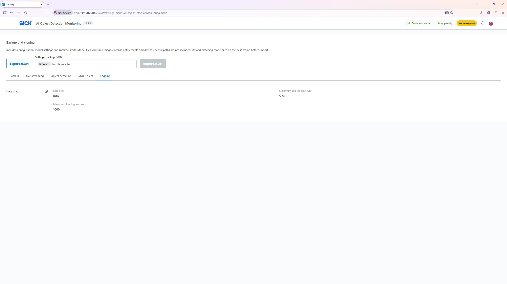

Settings → Logging
Logging Settings
Choose the app’s logging verbosity and bounded log storage parameters. For daily operation, INFO is a practical starting point.

Logging fields
| Setting | Meaning |
|---|---|
| Log level |
Set ERROR, WARNING,
INFO or DEBUG. Optimized
INFO.
|
| Maximum size (MB) | Limit for the application’s log-file size, 1–50 MB in the UI. Optimized 5 MB. |
| Maximum entries | Memory/buffer entry count, 100–10,000 in the UI. Optimized 1,000. |
How levels work
| Chosen level | Messages included |
|---|---|
| ERROR | Shows only errors. |
| WARNING | Shows warnings and errors. |
| INFO | Shows routine information, warnings and errors. |
| DEBUG | Shows detailed debug information and all higher severities. |
Recommended operation
Keep INFO during normal production. Temporarily set DEBUG for diagnosis, then restore INFO to reduce log noise. Save and reload after making application logging changes. The Log Monitoring page additionally has its own display filters and CSK device logger controls; these are not the same as application logging settings.
Retention: Maximum entries and log-file size are limits, not
a substitute for central archiving. Copy important diagnostic
evidence before it is overwritten or discarded.